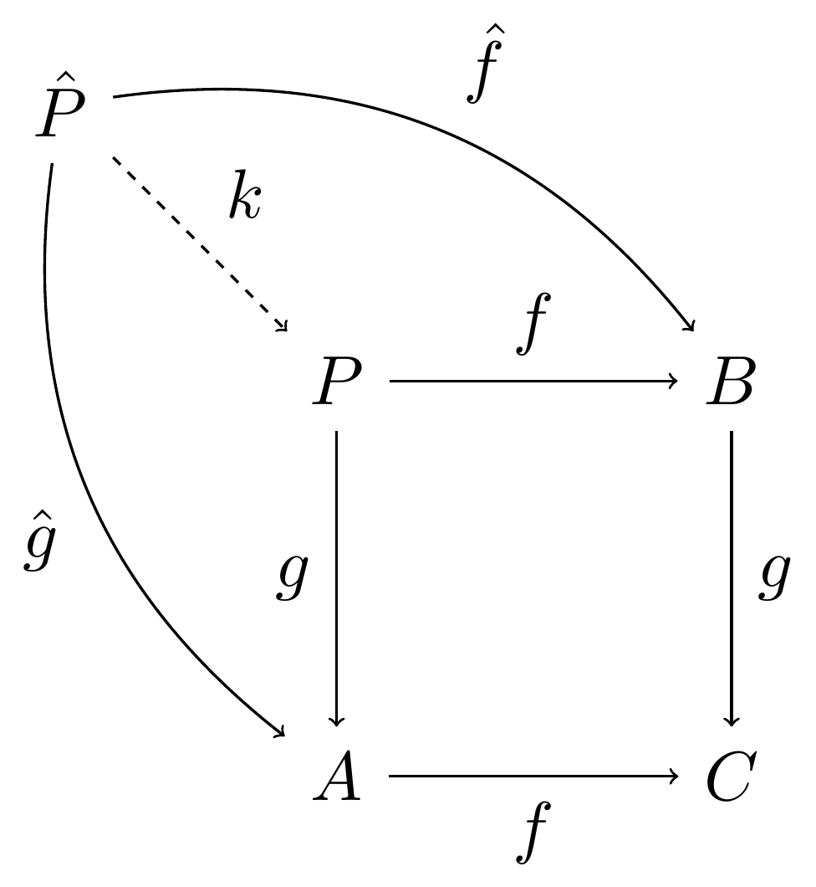

| mpg | cyl | disp | hp | |
|---|---|---|---|---|
| Mazda RX4 | 21.0 | 6 | 160 | 110 |
| Mazda RX4 Wag | 21.0 | 6 | 160 | 110 |
| Datsun 710 | 22.8 | 4 | 108 | 93 |
| Hornet 4 Drive | 21.4 | 6 | 258 | 110 |
| Hornet Sportabout | 18.7 | 8 | 360 | 175 |
| Valiant | 18.1 | 6 | 225 | 105 |
Demo NeurIPS format to use as template
Abstract
This document is only a demo explaining how to use the template.
Keywords
template, demo
1 Introduction
This is a dummy example only for the purpose to use this repo as a template starter for creating new formats. For this article-format-template we call our dummy article aft.
This quarto extension format supports PDF and HTML outputs. quarto-journals is aiming at porting existing {{< latex >}} template from journals to be used with quarto. PDF format is what require the most work to fit the journals guideline, but Quarto offer a nice rendering for HTML output too. This demo format template only use basic HTML format without any customization for now.
2 About Quarto Extensions formats And Quarto Journals Article
First, please get familiar with the following resources:
- Creating Formats in Quarto as part of the Extensions mechanism.
- Journals Articles for Quarto.
3 Structure of this repository
Everything for the extensions is in _extensions. See Quarto doc for details.
In
partials, you’ll find the.texpartials that can be used and should be removed or tweaked,sYour extension can make shortcodes and lua filters available. This document shows the effect of the one provided in the
aftformat.aftformat sets some defaults which are different frompdforhtml, link setting links to URL in read inside PDF output.
Source repository for this template format can found on Github
3.1 _extensions\aft
In this folder you’ll find everything that defines the extensions which could be installed using quarto install extension or be part of the template when using quarto use template
- Format Metadata
-
This is in
_extension.ymlis where all the metadata about the format are defined so that Quarto knows what to use. Adapt this file for you own template. - Partials
-
In
partials, there are the.texfiles that will be used as Pandoc’s template. We provide here all the partials supported by Quarto and custom one for this format. Quarto allows to provide partials to ease the process of tweaking the default latex Pandoc’s template and keeping it up to date.
This template repo contains all the relevant partials that you can use with Quarto as example. We only tweakedtitle.texto show the usage of a custom partials called_custom.tex.
Only keep the partials that you need to tweak for the format you are creatingIf you need to completely change the default template (i.g customizing partials is not enough), then you need to provide your own template to Pandoc based on
template.texand also using partials or not. This can be provided using thetemplateYAML key in_extension.ymlfor Quarto to use it.This is considered advanced configuration as it will be harder to maintain than only using partials but could be required for some specific format. Be aware that this may lead to loose some Pandoc or Quarto features tied to default
template.texcontent if you remove some specific parts. - Lua Filters
-
Most of the time, custom formats will need Lua filters to provide specific features like cross format supports or provides custom shortcodes through the Quarto extension mechanism. Those filters will be available to the user and could be used in the custom formats (according to
_extensionsmetadata). We have provided two examples:color-text.lua, a Lua filter used to add color to inline text for PDF and HTML outputs using the same Markdown syntaxshorcodes.lua, a Lua filter which follow Quarto custom shortcodes guidelines to provide ashortcode to nicely print LaTeX in PDF and HTML.
Remove or replace with your own Lua filters
- Format resources
-
Resources required by the format needs to be available. We have provided two examples:
te.bstis a biblio style file for demo. It has been downloaded from https://www.economics.utoronto.ca/osborne/latex/TEBST.HTM (http://econtheory.org/technical/te.bst) - Licence LPPLaft.clsis a dummy class file for this example format. It is a copy of officialarticle.cls, the one provided in LaTeX installation (i.e atkpsewhich article.cls) and renamed as example (Licence LaTeX Project Public License)custom.scssis a style file to have a custom theme for our HTML format so that our Lua filter featurecolor-tex.luaworks.
Those files are referenced within the
_extension.ymlto be used with our example format.Remove and replace with your own resources
.quartoignore-
Sometimes it is useful to have some files only needed for reference or for development. They should be available in the source repository but not downloaded to the user when
quarto use templateis used.Use
.quartoignoreto register such file and folder (one file or folder per line) style-guidefolder-
For
quarto-journalsformat, usestyle-guidefolder to include any documentation and resourced used for format creation, like a journal style guide or original.textemplate. This folder is already added in.quartoignorein this example repo.Remove, rename or add to this folder
template.qmd-
This file is the template document that shows how to use the custom format. It will be downloaded with other resource by
quarto use template, and even offered to be renamed if the nametemplate.qmdis used.This file will usually use the custom format (here
aft-pdfandaft-html) and show how to use the template. When you’ll copy this template, you should be able to render this document to the demo format.Adapt this file to provide a suitable template for your custom format
- Other files
-
Other files are needed by the template and are usually user provided - they are not part of the custom format.
Here
bibliography.bibis here to demo the usage of the bst file from the custom format.Remove this file and provide a suitable one for your template
4 Checklist: Creating a custom format
Here is the checklist to help you know what to modify:
- Read the resources mentioned at the top,
- Use this template repo to create a new repository for your format (Click on “Use this template” to create new github repo)
- Once you are acquainted with the content, remove the resources that are there only as example (see above)
- Update README by replacing
aftandArticle Format Templatementions for your journal format - Keep only the template partials that you need to tweak, and add custom ones if needed
- Add any Lua filters for shortcodes and other that would be useful to create the expected output format
- Add any external resource your format will need, and that should be part of the extension format that will be downloaded,
- Check
_extension.ymlis updated correctly - Modify the skeleton
template.qmdto your format and add any required resources to be downloaded to user. - Check
.quartoignoreis updated which everything that should not be downloaded. - Publish a demo of you format to github pages of the repo by using
quarto publishcommand
5 Demo of some features found in this demo journal template
5.1 Shortcode demo
PDF are rendered using {{< latex >}} but it is best if one can use a Markdown syntax for cross format support.
used in source is a shortcode syntax where the shortcode is included in the extension folder _extensions
5.2 Text color
Our format makes applying color on inline text possible using the [content]{color=<name>} syntax. Let’s see an example.
Here we are using a special feature of our format which is the coloring because pink is a nice color.
This is possible thanks to the Lua Filter included in the custom extension format.
Using references
I did not read this book [1] but it must be interesting.
Differences between aft-html and aft-pdf:
- For the HTML format, we are using Pandoc citeproc to include the bibliography. Here
reference-section-titlecontrols the title for the chapter that will be used. - For the PDF format,
natbibis used by default and the bibliography is included with a title by the LaTeX template.
6 Table
| a | b |
|---|---|
| 1 | 2 |
| 3 | 4 |
7 Math
The equation is displayed here as Equation 1
\[ \frac{1}{2} \tag{1}\]
8 Figure

References
[1]
A. C. Cameron and P. K. Trivedi, Regression analysis of count data, 2nd ed. Cambridge: Cambridge University Press, 2013.